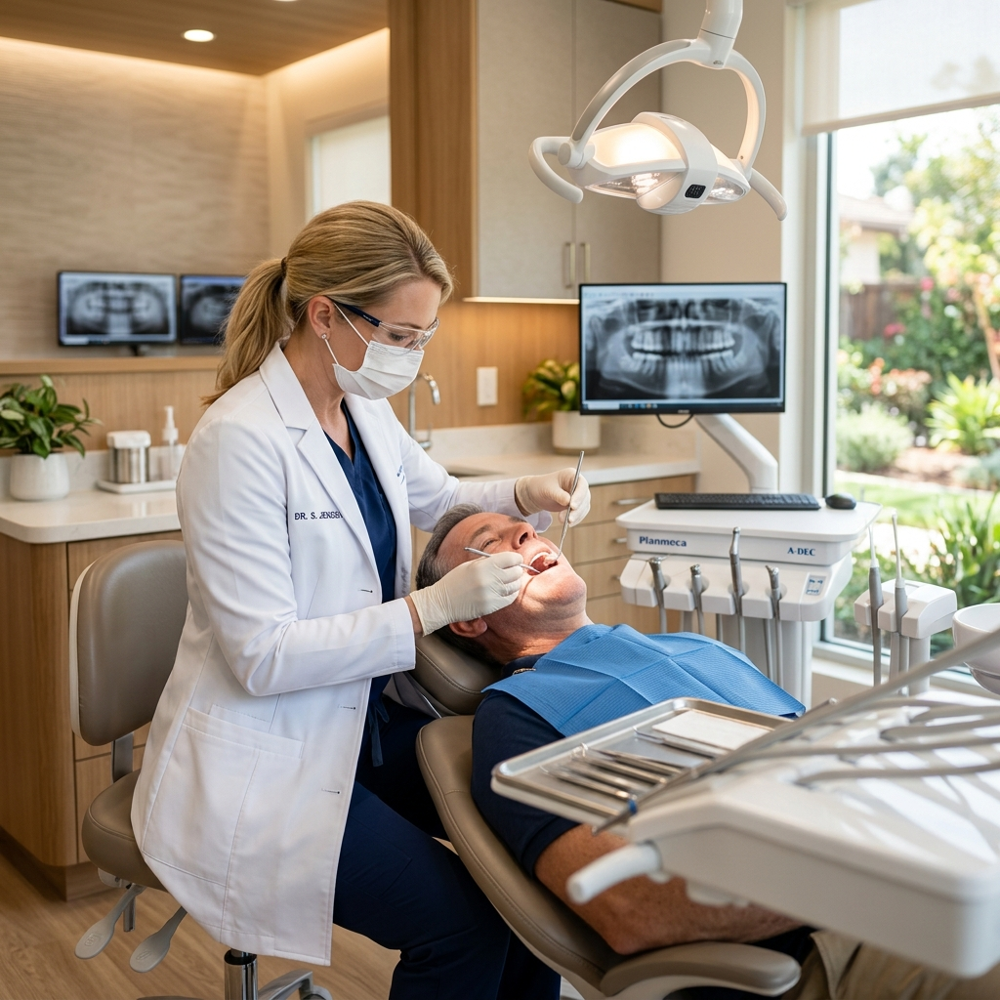
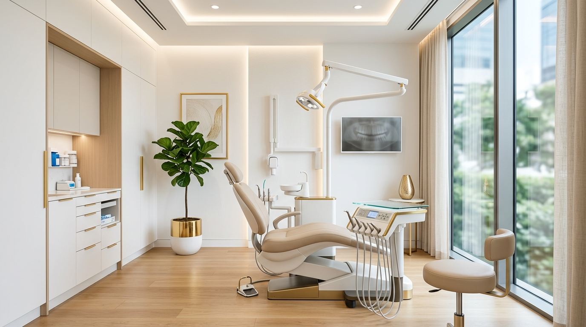

Nossas
Especialidades
Cada tratamento e planejado digitalmente para garantir previsibilidade e perfeicao absoluta no resultado final.
Lentes de Contato
Laminas ultrafinas de porcelana premium que transformam formato, cor e harmonia natural.

Clareamento Laser
Protocolo exclusivo que clareia ate 8 tons em uma unica sessao, sem sensibilidade.

Implantes Premium
Tecnologia suica em titanio e zirconia para um resultado permanente e imperceptivel.

Alinhador Invisivel
O padrao ouro mundial em ortodontia invisivel, totalmente digital e confortavel.